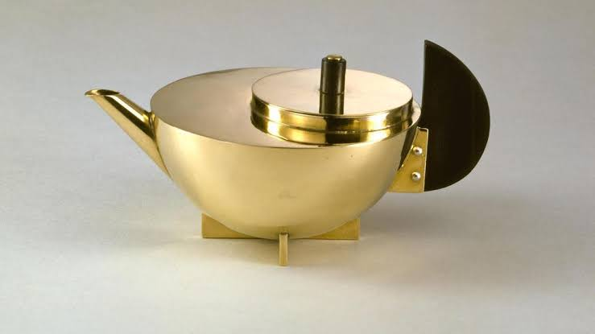

Descripción
Tetera con infusor; de plata, con cuerpo hemisférico labrado a mano sobre una base en forma de cruz, asa de ébano en forma de D y tapa plana descentrada con un pomo cilíndrico de ébano rematado en plata; el infusor original de plata calada con asa está diseñado para encajar perfectamente en la abertura superior.
Estampado con el sello de plata alemana 900 y la media luna y la corona, símbolos de Alemania.
Materiales
- Plata
- Ébano
Contexto
La icónica tetera de Marianne Brandt (1924) sintetiza la filosofía de la escuela alemana Bauhaus, donde la diseñadora rompió barreras de género al convertirse en la primera mujer en el taller de metal. Bajo el lema "la forma sigue a la función", Brandt aplicó los principios de la abstracción geométrica de su maestro László Moholy-Nagy para reducir el objeto a sus formas más esenciales —como esferas y cilindros—, demostrando que el arte vanguardista y la artesanía en plata y ébano podían sentar las bases para una producción industrial, masiva y puramente funcional.